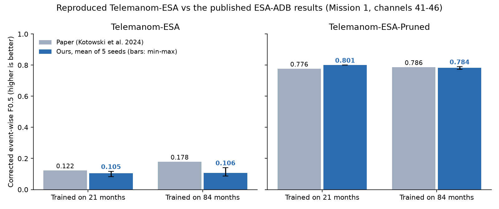
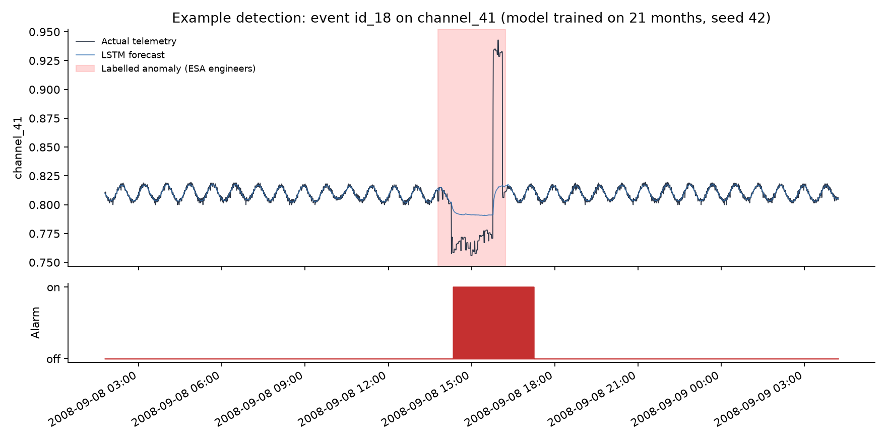
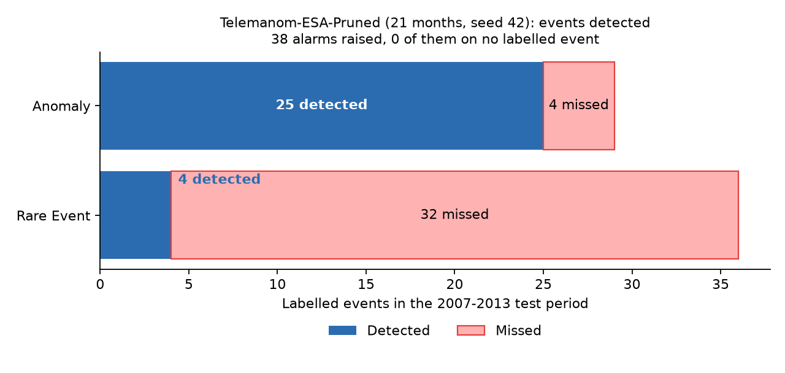

A satellite sends thousands of sensor readings (telemetry) to the ground, such as temperatures, voltages and currents. Engineers watch for anomalies: readings that behave in a way they shouldn't. Missing one can lose a mission, but false alarms waste engineers' time.
Our project trains a model to spot these anomalies automatically. It then adds smarter decision-making on top: when to run the expensive model, whether a sensor itself is faulty, which alarms belong to the same incident, and what to do about it.
| Term | Meaning |
|---|---|
| ESA-ADB | The European Space Agency's anomaly benchmark: real data from ESA missions, labelled by ESA engineers, with official scoring rules. Our dataset. |
| Telemanom | The model we trained. An LSTM forecasts each sensor, and an automatic threshold decides when the forecast error counts as an anomaly. |
| Anomaly / rare event | Anomaly: something is actually wrong. Rare event: unusual but harmless behaviour. The benchmark counts both. |
| F0.5 score | The main score, from 0 to 1. It treats false alarms as worse than misses, which matches what engineers want. |
| Pruned | The paper's best variant. It ignores very small forecast errors (below 0.007), which removes most false alarms. |
| Seed | A random starting point for training. We trained 5 seeds per setting to show the result isn't luck. |
We checked every step against the official numbers: the exact row counts, the 65 test events, and the scoring code against 10 hand-calculated cases.

Grey: published paper. Blue: our trained models (average of 5 runs). Higher is better.
| Model | Training data | Paper | Ours | Verdict |
|---|---|---|---|---|
| Telemanom-ESA-Pruned (main) | 21 months | 0.776 | 0.801 | Better (+0.025) |
| Telemanom-ESA-Pruned (main) | 84 months | 0.786 | 0.784 | Same (−0.002) |
| Telemanom-ESA (weaker variant) | 21 months | 0.122 | 0.105 | Slightly lower |
| Telemanom-ESA (weaker variant) | 84 months | 0.178 | 0.106 | Lower: more false alarms |

Blue: the model's forecast. Red band: a real anomaly labelled by ESA engineers. The forecast stops following the signal, so the alarm (bottom) switches on.

25 of 29 real anomalies caught, and no alarm landed outside a labelled event. Rare events are mostly missed: that is the weakness to fix.
We have a verified baseline, the "before" that every improvement is measured against.
| Contribution | In simple words | What it should improve |
|---|---|---|
| C1 Adaptive computation | A cheap detector checks everything. The heavy LSTM runs only when the cheap one is unsure, the pattern is unfamiliar, or the possible impact is high. | Less compute for the same or better accuracy |
| C2 Sensor reliability | Tell "the sensor is broken" apart from "the satellite has a real problem", by comparing sensors in the same group. | Fewer false alarms from bad sensors |
| C3 Incident correlation | Learn which sensors move together, and merge alarms from one incident into a single alert. | Fewer, clearer alerts |
| C4 Cost-aware response | For each alert, compare options (ignore, watch, escalate) by their expected cost, replayed on the real timeline. | Better decisions, not just detections |
| C5 Ablation study | Switch each part on and off to prove which one actually helps. | Scientific evidence for the paper |
| Paper | Link to our project |
|---|---|
| Zeng et al., "Satellite Telemetry Data Anomaly Detection Using Causal Network and Feature-Attention-Based LSTM", IEEE Trans. Instrumentation & Measurement, 2022 | Same idea as our model (LSTM plus a dynamic threshold). Its causal network between sensors inspires C3. |
| Xu, Cheng, Guo, "A Multivariate Anomaly Detector for Satellite Telemetry Data Using Temporal Attention-Based LSTM Autoencoder", IEEE Trans. Instrumentation & Measurement, 2023 | Adaptive thresholds and finding which sensor caused an alarm. These link to our decision layer and C2. |
| Zhang, Hu, "A Fourier Graph Attention Network for Satellite Anomaly Detection", IEEE CCECE, 2025 | A graph model across sensors, the direction of C3. |
GitHub: VONVOLT6/satmon-esa (private) | What it is |
|---|---|
RESULTS.md | The results report to show: setup, tables, charts, papers |
results/figures/ | All charts as images |
models/ | The 10 trained models (last.pt in each folder) |
src/ | The code: data, training, scoring, charts |
README.md | How to rerun everything |